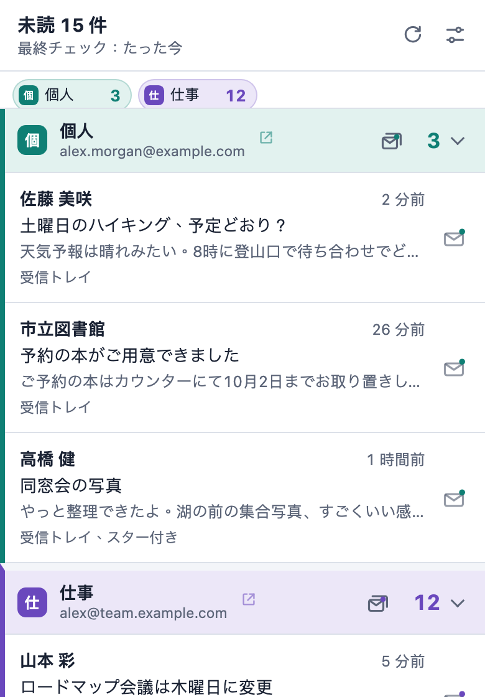

新着メールを、
ひと目で。
Chrome でログインしているすべての Gmail アカウントについて、ツールバーに未読件数を表示し、デスクトップ通知でお知らせします。追加のログインも OAuth もサーバーも不要です。
無料のオープンソース。8 言語に対応しています。

 4
4大事なメールは自分で決める
受信トレイ、各タブ、スター付き、重要、そして任意のラベルを、3 つのレベルから選んで設定できます。ここで試してみてください。設定ページのライブプレビューと同じように、アイコンと通知が選択に合わせて変わります。
- オフチェックしない
- カウントツールバー アイコンの未読件数に含める
- 通知カウントし、デスクトップ通知も表示する
表示の例
 4
4複数のメールボックスも、はっきり区別
Chrome でログインしている Gmail アカウントは自動で見つかり、一覧でそれぞれに分かれて表示されます。
それぞれに名前・色・通知音
ひと目で、そして通知音でもどのメールボックスか分かります。
合計でも、メールボックスごとでも
アイコンに 15 と表示することも、3/12 のように分けて表示することもできます。
ラベルは一覧から選ぶだけ
ラベルは Gmail から読み込むので、名前を入力する必要はありません。
Gmail を開かずに処理
Chrome のどのページにいても、新着メールをその場で処理できます。
通知から既読にする
通知をワンクリックするだけで、Gmail 側でも既読になります。
メールボックスをまとめて既読に
一度確認するだけで、メールボックスの未読メールをすべて既読にできます。
正しいメールを開く
メールをクリックすると対応する Gmail アカウントで開き、開いている Gmail タブを再利用します。
プライバシーを第一に
Pigeon Post は Chrome でログイン済みの Gmail をそのまま使います。アカウント登録も追加のログインも必要ありません。
通信先は mail.google.com だけ
サーバーも、アクセス解析も、広告も、トラッキングもありません。開発者には何も送信されません。
メールはメモリ上だけに
未読メールの差出人・件名・スニペットはメモリ上にのみ保持され、Chrome を閉じると消去されます。
必要なものだけを読む
Gmail の未読メールフィードだけを読み、本文全体は読みません。依頼された既読処理以外は何も変更しません。
オープンソース
すべてのコードを GPL-3.0 ライセンスで GitHub に公開しているので、何をしているか自分で確認できます。
1 分ではじめられます
Chrome に追加
Chrome ウェブストアから Pigeon Post をインストールします。
Gmail にログインしたまま
Chrome でログインしている Gmail アカウントは自動で見つかります。
大事なものを選ぶ
すぐに設定ページが開きます。カウントするものと通知するものを選びましょう。

Pigeon Post を無料のままに
Pigeon Post には広告もトラッキングも有料版もありません。時間の節約に役立っていたら、タピオカや少額の支援で、Gmail や Chrome の変更への対応と次のツールづくりを続けられます。
タピオカはクレジットカードで支払えます。PayPal アカウントは不要です。